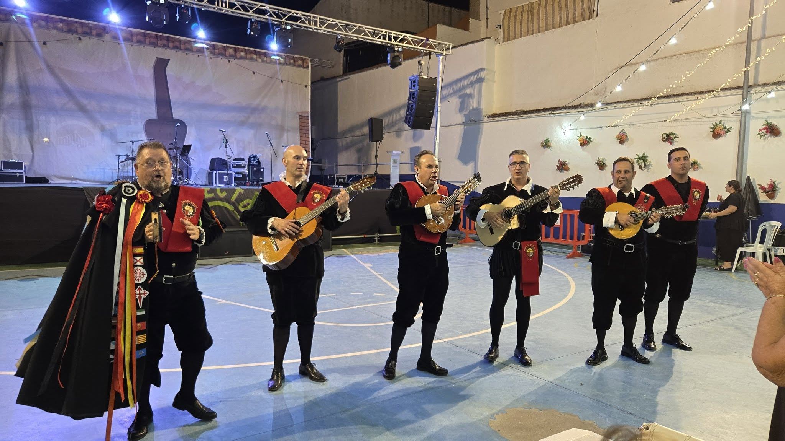

Eventos
31 julio 2026
La Tuna ameniza la "Cena de los Mayores 2026" en Marmolejo
Una noche mágica compartiendo música y alegría con las personas más especiales de Marmolejo. El Ayuntamiento confió en nosotros una vez más.
Leer más →